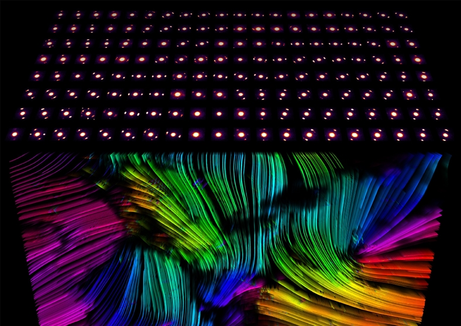
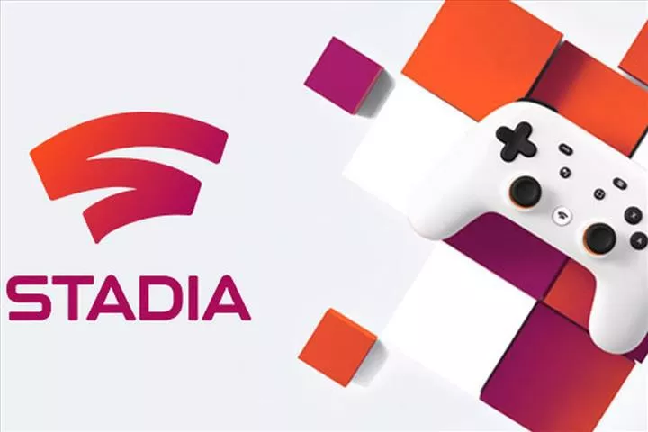
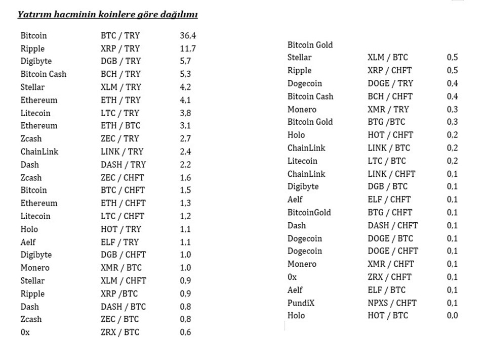

AMD için beklenen özellik geliyor!
Nvidia‘nın kullanıcılara ışın izleme teknolojisi yani Ray Tracing özelliğini sunmasıyla birlikte, AMD ile Nvidia arasındaki rekabet kızıştı. Birçok oyun sever tarafından da oldukça beğenilen Ray Tracing AMD ekran kartları için geliyor.devamını gör...

4D Mikroskoptan Alınan İnanılmaz Görüntüler, Moleküler Yapıları Sanata Dönüştürüyor
Günümüzde birçok mikroskop bulunuyor. Oldukça gelişmiş teknolojiler ile çalışan araştırmacılar yine de molekülleri istenilen netlikte göremeyebiliyor.devamını gör...

Google Stadia uygulaması Play Store’da yayınlandı
Google'ın bulut üzerinden AAA oyunları oynamaya imkan sağlayacak abonelik hizmeti Stadia, 19 Kasım'da resmen kullanıma açılacak. Hizmetin Android uygulaması ise bugün kullanıcılara sunuldu.devamını gör...
Sony ilginç PlayStation 5 patenti ile gündemde
Sony, 2020 yılında çıkacak olan yeni PlayStation 5 modeli için hazırlıklarına devam ediyor. İddialara göre şirket, Brezilya Patent Enstitüsü’ne (INPI) gelecek yıl çıkaracağı PS5 modeli için başvuruda bulundu. PS5 patenti tüm dikkatleri üzerine çekmeyi başardı.devamını gör...
İşte Türkiye'de en çok tercih edilen kripto paralar
Türkiye'de Bitcoin, kripto paralar içinde en çok alım satımı yapılan coin. Tüm alım satımların 3'te 1'inden fazlası (% 36.4) Türk lirası ile Bitcoin (BTC/TRY) işleminden oluşuyor. Onu yüzde 11,7 ile Ripple ve yüzde 5,7 ile Digibyte takip ediyor.Türkiye’de kripto paralara olan ilgi gün geçtikçe artarken, geçmişte sadece Bitcoin ile sınırlı olan talep de farklı alt coinlere yayılmaya başladı. Kripto Arena’nın, kripto para alım satım platformu Bitci.com'un verilerinden yaptığı değerlendirme de Türkiye'de bu alandaki yatırım hacminin coinlere göre dağılımını ortaya koydu.
RIPPLE VE DIGIBYTE İLK 3’TE
Buna göre dünyada en çok tercih edilen kripto para birimi olarak bilinen Bitcoin, Türkiye’de de yatırım hacmine oranla değerlendirildiğinde kullanıcıların favori coini konumunda. Bitci kullanıcılarının yüzde 36,4’ü, Türk Lirası üzerinden Bitcoin alım satımı gerçekleştirirken, yatırımcıların ilgi duyduğu diğer bir coin de küresel bir ödeme ağı olarak ortaya çıkan Ripple. Buna göre kullanıcıların Türk Lirası ile Ripple alım satım işlemleri, toplam yatırım hacminin yüzde 11,7’si oluşturuyor. Ripple’ı son dönemin gözde coinlerinden Digibyte takip ederken, Türk Lirası üzerinden yapılan Digibyte işlemlerinin toplam içindeki payı yüzde 5,7 seviyesinde..
ALT COİNLERİN PAYI HER GEÇEN GÜN ARTIYOR
Konuyla ilgili değerlendirmelerde bulunan Bitci Genel Müdürü Altan Tan, “Türkiye’de de dünyada olduğu gibi bitcoin en çok tercih edilen kripto para. Bunda bitcoinin kripto para ile özdeşleşmiş bir jenerik isim olmasının elbette çok önemli bir etkisi var. Birçok yatırımcı alt coinlere bile yatırım yapsa yatırımını ‘bitcoin aldım’ diye ifade edebiliyor. Ama bundan iki üç yıl öncesiyle karşılaştırdığımız zaman alt coinlerin sektördeki toplam yatırım hacmi içerisindeki payı çok hızlı biçimde yükseliyor” dedi.Türkiye’deki kripto para yatırımcılarının kullanım alışkanlıkları üzerinden yaptıkları değerlendirmede, Türk Lirası üzerinden alım satım imkânının en büyük ihtiyaç olarak öne çıktığını belirten Altan Tan, “Biz de yatırımcıdaki bu ihtiyacı ve iştahı görerek Bitci platformunda TL bazında alım-satım dönemini başlattık. Başlatmamızın ardından gelen yoğun talep de ne kadar doğru bir karar verdiğimizi aslında net bir şekilde gösterdi” dedi.
Hakkımızda
Güncel olmayan teknoloji haberleri sunan amatör bir web sitesi.